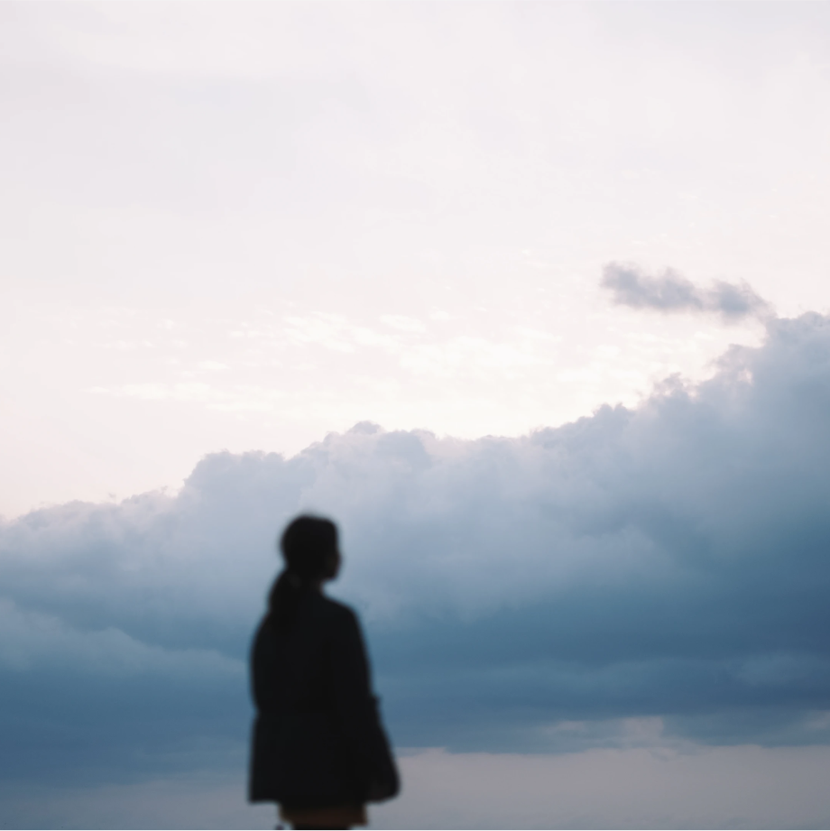
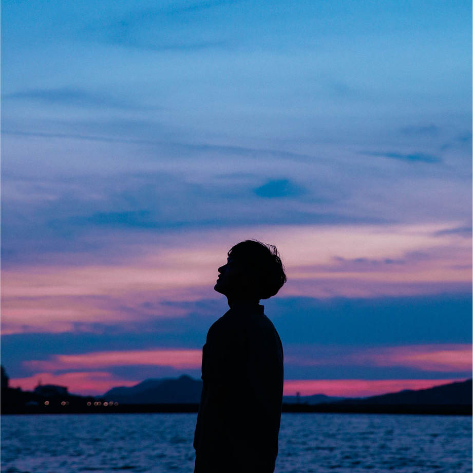

BRAND STORY
Discover
Your Harmony
테트라필드는
당신의 업무, 여가,
휴식의 공간
그리고 당신과 함께할
사람들과의 시간까지
고민합니다.
Philosophy
Written by G-planning
어떻게 하면 일과 삶의 조화를
안정적으로 만들 수 있을까?
인생에 있어 성공보다 중요한 건
어떻게 삶의 방향을 바로잡을 것인가를
끝없이 고민하는 것
그래서 테트라필드는
공간이 추구해야할 가치와
브랜드가 지켜내야 할 요소들에 대해
고민하고
완벽을 넘어 안정된 삶을
만들어갈 수 있도록
새로운 공간과 시간을
만들어 갑니다
제주를 담다
제주를 품에 담아
삶의 조화를 찾아가는
사람들의 이야기
-

첫번째 이야기 꼭 한 곳에서만 일할 필요는 없으니까
-

두번째 이야기 여가를 즐기다” 편
-

세번째 이야기 제주가 주는 특유의 안락함과 자유로움
-
두번째 이야기 여가를 즐기다” 편
-
BEHIND STORY
첫번째 이야기 꼭 한 곳에서만 일할 필요는 없으니까
-
BEHIND STORY
두번째 이야기 그럼에도 자연과 함께
-
BEHIND STORY
세번째 이야기 제주가 주는 특유의 안락함과 자유로움
제주만의 평범하면서도
특별한 일상들
PLAY / REST
WORK / REST
PLAY / REST / PEOPLE
PLAY / REST / PEOPLE
REST
REST / PEOPLE
WORK / REST
PLAY / REST / PEOPLE
PLAY / REST / PEOPLE
PLAY / REST